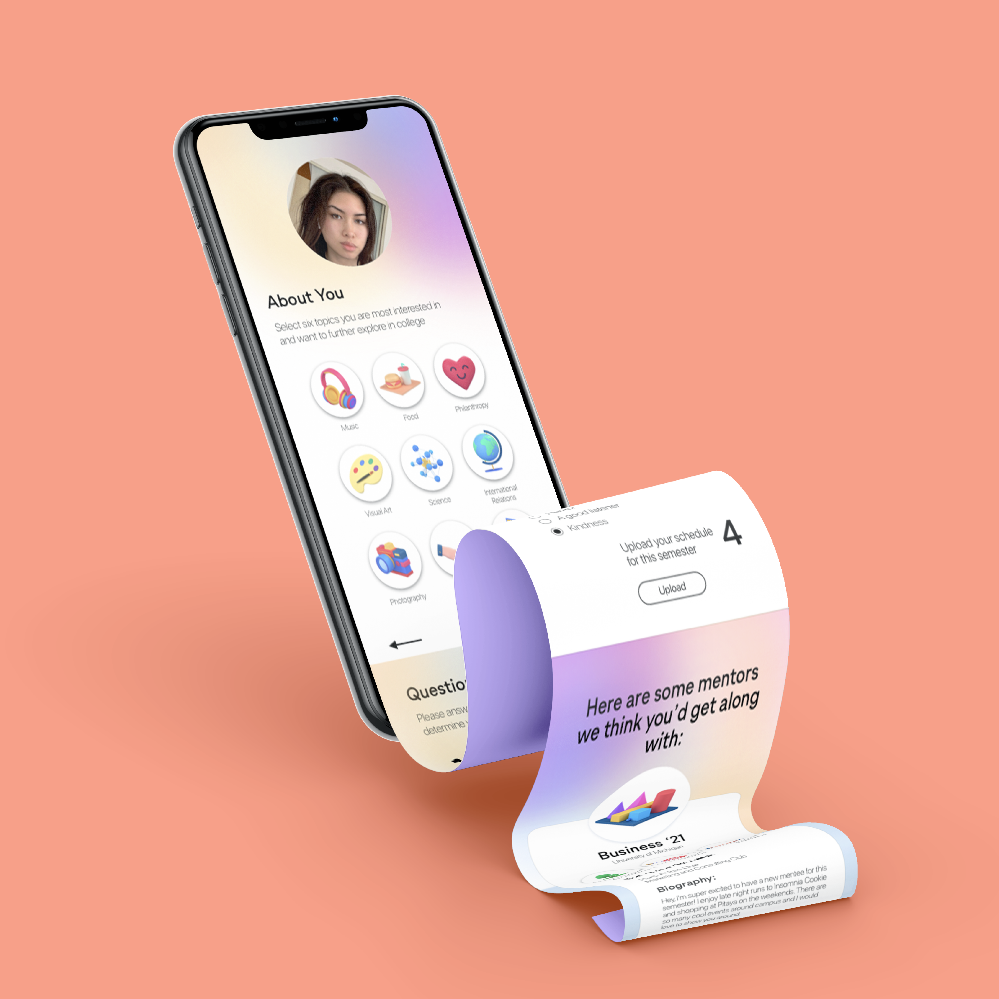
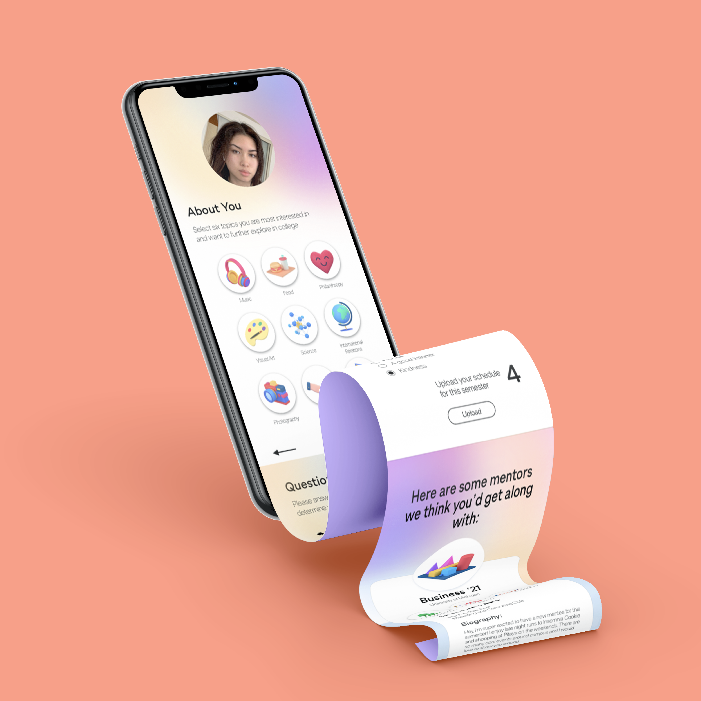

The two projects consisted of: iBudget
Problem: Proper budgeting is a common issue for post-secondary
students, often their first experience managing personal finances,
students tend to overspend. Current budgeting apps are catered towards
working individuals with full-time jobs, usually complex and focused
on investing and credit score monitoring, it can prove to be a
difficult experience for students beginning their budgeting journey.
Solution: iBudget is an efficient and intuitive way for a college student to manage
their expenses and adjust future spending accordingly. It’s customizable so that
the user can cater the categories to their personal needs and easy to understand and
focused on more immediate spending.
The second one being a design challenge; Integrate:
To strengthen the school community your school wants to create an
experience that allows older students to connect with new students to help them
adjust. Consider the sign up process and how mentors and mentees can connect with
each other through on-campus experiences.
UI / UX
Designs 💻
Below are final mockups of
several UX projects I did
in the past. They're focused on
student budgeting and pairing
incoming students with mentors. 🌟
👇🏼


 
